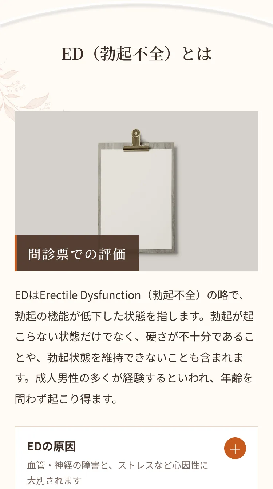
EDは、血管や神経の障害による器質的EDと、精神的ストレスなどによる機能的ED（心因性ED）に大きく分けられます。血管の障害の原因としては、加齢・高血圧・喫煙・糖尿病・脂質異常などが、神経の障害の原因としては、脳出血や脊髄損傷・糖尿病性神経障害・骨盤内手術などが挙げられます。心因性の原因としては、うつ病などの精神的な要因が関係することがあります。
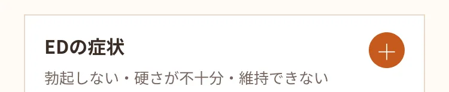
主な症状は、勃起が起こらない、硬さが不十分である、勃起状態を維持できない、の3つです。これらのいずれか、または複数があてはまる場合、EDの可能性があります。
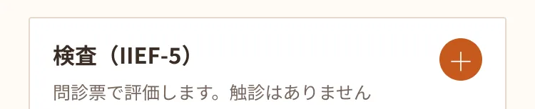
当院では『IIEF-5（国際勃起機能スコア）』という問診票を用いて、EDの状態を評価します。複数の質問への回答からスコアを算出し、ご自身の状態を客観的に把握できます。触診などはなく、問診を中心に進めます。
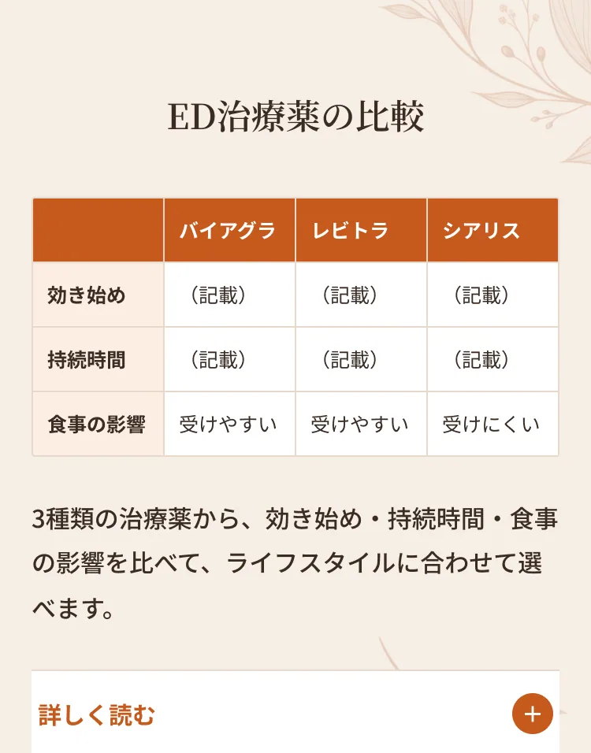
バイアグラ、レビトラ（バルデナフィル）、シアリスの3剤のED治療薬を取り扱っています。これらを行為前の決められたタイミングに合わせて内服します。ED治療薬の服用により勃起を繰り返すことで血流量が増え、症状の改善につながります。バイアグラ・レビトラは食事の影響を受けやすいため注意が必要で、シアリスは食事の影響を受けにくいと報告されています。効果の発現時間や持続時間、食事の影響が薬によって異なるため、『ED治療薬比較表』を参考に、ライフスタイルに合わせて選んでいきます。
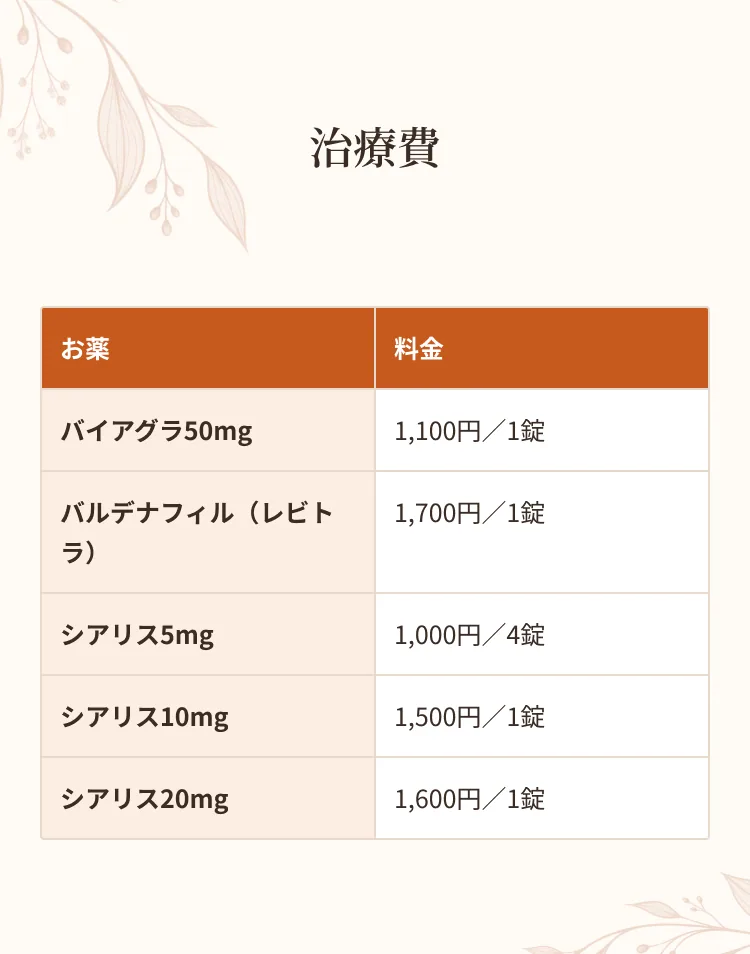
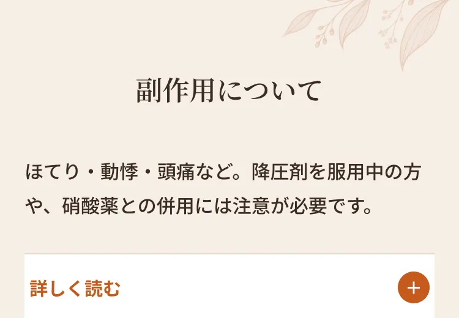
ED治療薬の副作用には個人差がありますが、主なものはほてり・動悸・目の充血・軽度の頭痛などで、これらは血管が拡張する作用に関係して生じます。多くは時間の経過とともに収まりますが、長く続く場合は医師にご相談ください。ED治療薬には血管を拡張し血圧を下げる作用があるため、高血圧で降圧剤を服用している方は急に血圧が下がる恐れがあり、服用前に医師への相談が必要です。また、グレープフルーツに含まれるフラノクマリンは薬の作用を大幅に強めてしまうため禁忌とされ、その影響は約24時間続きます。摂取後は24時間以上空けて服用することをおすすめします。なお、硝酸薬（ニトログリセリンなど）との併用は禁忌です。
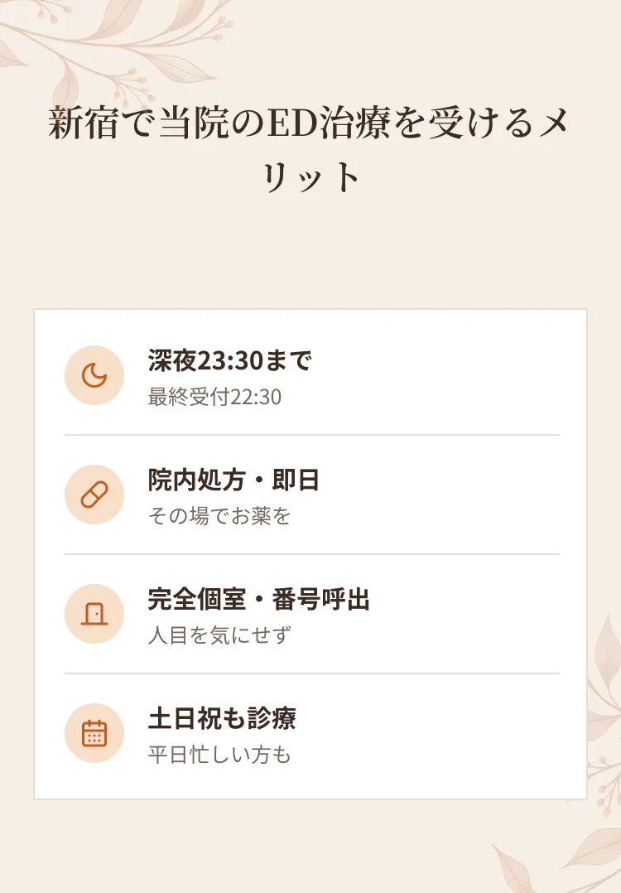
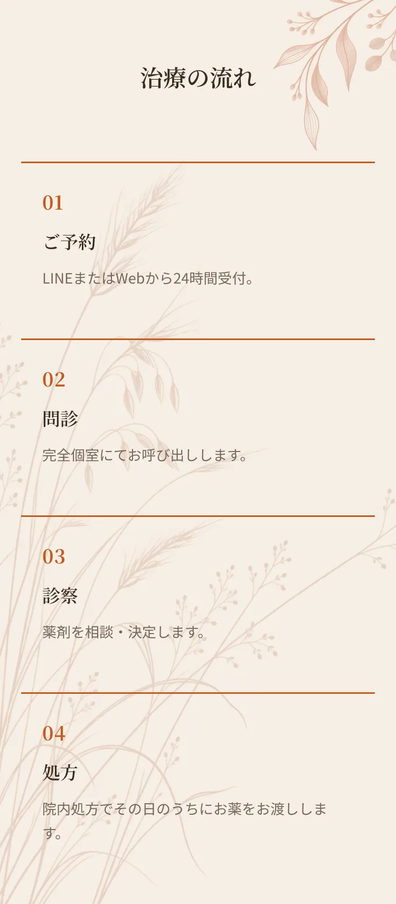
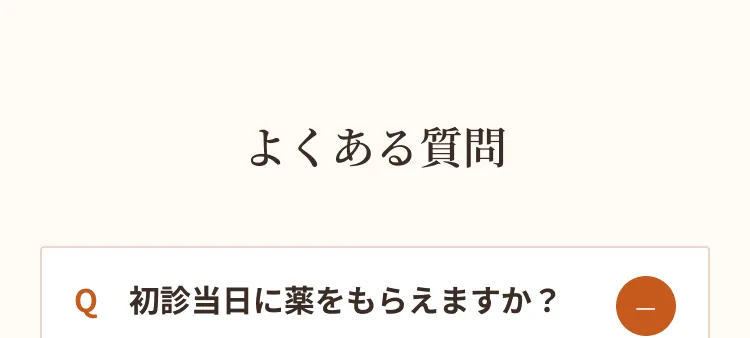
A.院内処方で初診当日にお渡しできます。
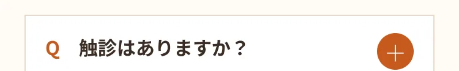
A.触診はなく、問診（IIEF-5）を中心に進めます。
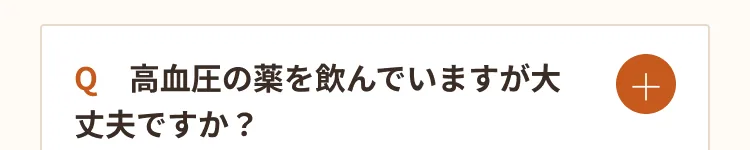
A.急な血圧低下の恐れがあるため、服用前に必ず医師にご相談ください。
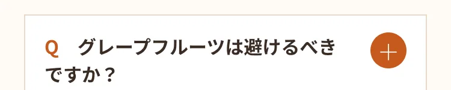
A.薬の作用を強めるため、摂取後24時間以上空けてください。

A.深夜23:30まで（最終受付22:30）対応しています。